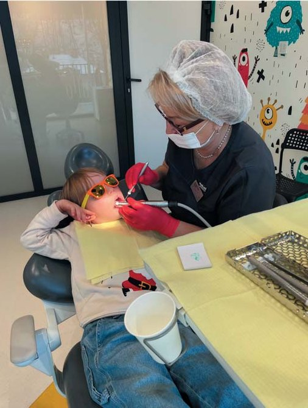
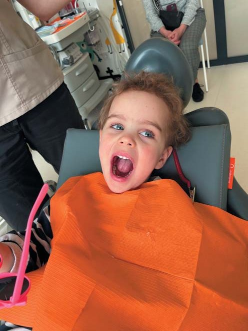
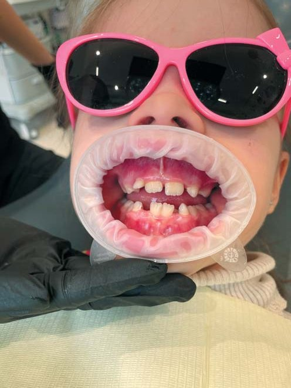
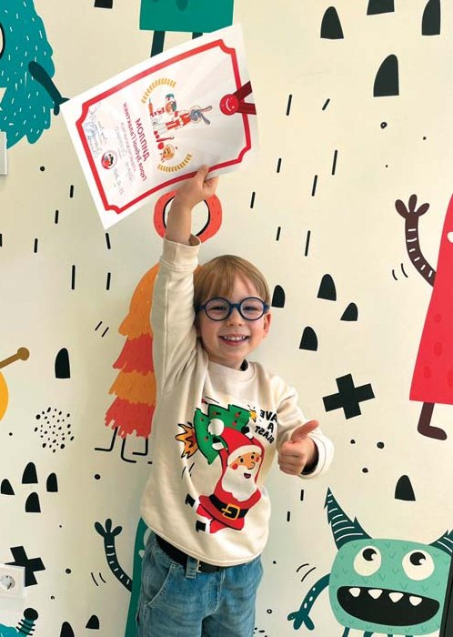

Профілактика · журнал «ДентАрт» 2024 №2
Cучасні тенденції профілактики карієсу у дітей
Contemporary Prevention Aspects of Dental Caries in Children
Стоматологічне лікування дітей за наявності карієсу та його ускладнень дуже складне і часто не дає належного результату через низку об'єктивних причин: маленький вік дитини і неможливість співпраці з нею, тривалий час і технічна складність маніпуляцій, неможливість оцінити прогноз лікування. Усе це призводить до ранньої втрати зубів, труднощів у вживанні їжі, психологічних проблем, виникнення зубощелепних аномалій. У подальшому поганий стан ротової порожнини може призводити до зниження шкільної успішності, ускладнених соціальних відносин і пізніше – до менших успіхів у житті. Діти, які відчувають зубний біль, відволікаються і неспроможні належним чином зосередитися на шкільних заняттях.

Саме тому особливо важливою є розробка нових стратегій профілактики карієсу у дітей, заохочення батьків до збереження зубів здоровими, мотивація до ранньої гігієни ротової порожнини та здорового способу життя. Особливо це стосується України, адже поширеність карієсу у дітей у нас становить 86–93,5 %. У різних регіонах вона різна – від 18,32 % до 89,17 % у дітей віком 3 роки, від 52,17 % до 100 % у дітей 5 років і досягає майже 100 % у старших дітей у період змінного прикусу.1-3 У той же час в інших країнах Європи, де активно проводяться програми профілактики, карієс виявляють значно рідше: у 29,3 % випадків у Великій Британії, 33 % у Німеччині, 28 % у Швеції, 21 % у Швейцарії.
Метою цієї публікації є пошук та узагальнення сучасних новітніх стратегій профілактики карієсу, що відповідають даним доказової медицини, задекларованим в останніх гайдлайнах Європейської академії дитячої стоматології (EAPD), Міжнародної асоціації дитячої стоматології (IAPD), Британського товариства дитячих стоматологів (BSPD), ВООЗ та сучасних Стандартах лікування карієсу МОЗ України (2024).4 Майже всі фактори ризику карієсу тимчасових зубів у дітей є керованими, а тому розробка та впровадження профілактичних програм, включаючи правила догляду за ротовою порожниною та зубами і харчування дитини, а також усунення факторів ризику, є абсолютно реальними.
Основні засади профілактики карієсу у ранньому віці полягають у таких стратегіях:5
Удома: Батьки мають впроваджувати рекомендації щодо характеру харчування дитини, навичок гігієни, використання фтору, обмеження передачі бактерій від батьків.
У стоматолога: Лікар зобов'язаний робити огляди з метою раннього виявлення карієсу, надавати рекомендації щодо харчування, проводити фторпрофілактику та герметизацію фісур.
У соціумі: Потрібна просвітницька та освітня робота, розвиток соціуму, фторування води у тих регіонах, де це необхідно.
Виходячи із сучасних протоколів профілактики, перший візит до дитячого стоматолога повинен відбутися у віці дитини 6 місяців – 1 рік. Саме дитячий стоматолог повинен чітко роз'яснити батькам роль і значення тимчасових зубів для збереження здоров'я дитини, забезпечення нормальних умов для фізіологічного розвитку зубощелепної системи, обґрунтувати режим і характер харчування дитини, щоб запобігти виникненню раннього карієсу, навчити правильно чистити зуби та підібрати засоби гігієни, а також запропонувати профілактичну програму. У подальшому – регулярні візити до стоматолога (1 раз на 3 місяці) для здійснення профілактичних заходів.
Окремо слід зупинитися на особливостях вигодовування дітей раннього віку, оскільки існує прямий зв'язок між ризиком виникнення карієсу та особливостями харчування дітей. Надання порад щодо дієти та харчування вагітним жінкам, матерям чи іншим опікунам дітей віком до одного року дещо знижує ризик карієсу у їхніх дітей в ранньому віці.6 Річний вік є важливою віхою у житті дитини. Батькам, які годують дитину з пляшечки, особливо вночі, настійно рекомендується припинити годування з пляшечки до цього часу, а матері, які годують грудьми, змушені подумати про скорочення годувань у нічний час. Ті, хто вирішив продовжувати грудне вигодовування, повинні отримати профілактичні поради від свого стоматолога, щоб дитина мала дієту з низьким вмістом цукру і регулярно чистила зуби пастою з фтором. В ідеалі, останньою на зубах дитини перед сном завжди повинна бути зубна паста з фтором. Існує нова база доказів, які свідчать про те, що коли дитину після 12-місячного віку годують грудьми на вимогу та протягом ночі після твердої їжі, це має потенційний зв'язок із розвитком раннього дитячого карієсу (РДК).

Рекомендації стосовно грудного вигодовування до 2 років повинні мати за умову регулярне чищення зубів і харчування зі зменшенням споживання цукровмісних продуктів, тому вважається, що у разі, коли грудне вигодовування триває понад 1 рік, потрібна консультація стоматолога для огляду та профілактичних порад щодо дієти (особливо споживання вуглеводів), гігієни ротової порожнини чи додаткового застосування фториду.7
Проведені дослідження засвідчують, що грудне вигодовування може захистити дітей від раннього карієсу, але його тривалість, більша ніж 12 місяців, пов'язана з вищим ризиком РДК.8
Дослідження засвідчують також, що споживання напоїв, які містять вільний цукор, із пляшечки для годування немовлят тісно пов'язане з ризиком РДК.9,10 Додавання вільних цукрів до прикорму також пов'язане з вищим ризиком РДК, хоча дані щодо цього обмежені.9,10
Виходячи зі сказаного, можна дати такі рекомендації батькам:
- не привчайте дитину до нічного пиття із пляшечки;
- не підсолоджуйте напої;
- за потреби вночі у пляшечку наливайте лише воду;
- не зловживайте соками, особливо консервованими;
- припиняйте годування з пляшечки, як тільки дитина навчиться пити з горнятка;
- не практикуйте безладне грудне вигодовування;
- не використовуйте пляшечку із солодким напоєм як заспокійливий засіб для дитини;
- привчайте дитину до чищення зубів відразу після прорізування перших зубів, використовуючи зубну пасту із фтором;
- уперше відвідайте з дитиною дитячого стоматолога з прорізуванням першого тимчасового зуба;
- уникайте перекусів між основними прийомами їжі.
Особлива увага у профілактиці карієсу відводиться дотриманню гігієни ротової порожнини дитини. Усі дані доказової медицини наголошують на тому, що чистити зуби слід починати із прорізуванням першого зуба.11
Враховуючи ухвалені Європейською академією дитячої стоматології у 2019 році нові рекомендації щодо використання фторидів для дітей, слід звернути увагу на те, що починаючи із 6-місячного віку, рекомендовано використовувати пасту із вмістом фтору 1000 ppm (таблиця 1).
Батьки мають розуміти необхідність використання фторидної зубної пасти з мінімальним вмістом 1000 ppm двічі на день. Наукові дослідження підтверджують, що персональна гігієна ротової порожнини за відсутності фтору не працює.11
При цьому максимальний карієспрофілактичний ефект досягається за умови дотримання таких правил якісної гігієни ротової порожнини: дворазове щоденне чищення зубів зранку і ввечері після їди фторидвмісною зубною пастою протягом 2-3 хвилин. Щоб максимізувати сприятливий ефект фтору в зубній пасті, слід чистити зуби під наглядом, двічі на день, а полоскання після чищення зубів звести до мінімуму або взагалі його уникати.12 На сьогодні носіями фтору в зубних пастах є такі сполуки, як фторид натрію, монофторфосфат натрію, фторид олова, амінофторид. Також неодмінно треба рекомендувати електричні зубні щітки для дітей віком від трьох років і старших, оскільки це компенсує погану техніку, а ще допомагає дітям очистити зуби на довше.
Підвищена концентрація фтору в ротовій рідині після вечірнього чищення зубів зберігається 12 годин, а після ранкового чищення – 4 години, і найбільше значення тут має не кількість пасти, а концентрація фтору в ній.12,13
За різними рекомендаціями, батьки до 8–10 років зобов'язані чистити зуби дітям або контролювати чищення, оскільки діти до цього віку не мотивовані до регулярного чищення зубів і не можуть якісно вичистити всі зуби зі всіх боків від нальоту.
Після початку прорізування постійних зубів приблизно у віці 6 років рекомендована зміна зубної пасти на пасту з більшою концентрацією фтору –1450 ррm, оскільки в цей період відбувається інтенсивна вторинна мінералізація постійних зубів, які поступово прорізуються.12,13
Багато сучасних зубних паст поряд із фторидами містять ксилітол, який зменшує інфікування ротової порожнини дитини Streptococcus mutans, особливо у віці 16–33 місяці життя (так зване «вікно інфікування»). Ксилітол містить на одну молекулу вуглецю менше, ніж глюкоза, і тому не може використовуватися мікроорганізмами зубного нальоту як харчування. На сьогодні доведено унікальні протикаріозні властивості ксилітолу, який підвищує також слиновиділення, запобігає підвищенню кислотності слини, збільшує відносну кількість розчинних полісахаридів і утворює комплекси з кальцієм, запобігаючи демінералізації емалі.
| Вік (роки) | Концентрація (ч/млн F) | Частота | Кількість (г) | Розмір |
|---|---|---|---|---|
| Перший зуб — до 2 років | 1000 | Двічі на день | 0.125 | Рисове зернятко |
| 2–6 років | 1000* | Двічі на день | 0.25 | Горошина |
| Понад 6 років | 1450 | Двічі на день | 0.5–1.0 | По всій довжині головки щітки |
*Для дітей 2–6 років 1000 + концентрація фториду може розглядатися, базуючись на індивідуальному ризику карієсу.
Дитячий стоматолог повинен добре орієнтуватися в сучасному арсеналі засобів гігієни ротової порожнини і давати кваліфіковані рекомендації щодо підбору та зміни зубних паст і щіток своїм маленьким пацієнтам в залежності від віку та стоматологічного статусу.
Крім індивідуальної профілактики карієсу шляхом використання фторидвмісної зубної пасти, інші місцеві фториди можна використовувати, особливо у дітей, що мають підвищений ризик розвитку карієсу, зокрема у дітей з особливими потребами, у догляді за ротовою порожниною або під час ортодонтичного лікування та в періоди ризику, такі як прорізування зуба. Докази щодо профілактичного ефекту гелів, ополіскувачів і лаків є більшими за якістю та кількістю для постійних зубів, ніж для молочних.13-15
Регулярне застосування лаку з 5 % фториду натрію (22600 ppm) може запобігти розвитку нового карієсу зубів і сприяти ремінералізації ранніх пошкоджень емалі. Оскільки лікар контролює кількість використовуваного фторовмісного лаку, фторлак вважається місцевим фтористим засобом вибору для професійного застосування. Для підтримання ефективності потрібні регулярні застосування фторовмісного лаку кожні 3–6 місяців.
| Заява | Ступінь якості доказовості | Ступінь сили рекомендації |
|---|---|---|
| Щоденне чищення зубів пастою з фтором запобігає карієсу | Високий | Сильний |
| Зубні пасти, що містять більшу концентрацію фтору, ефективніші для запобігання карієсу, ніж пасти з меншою концентрацією | Високий | Сильний |
| Чищення зубів під наглядом ефективніше, ніж без нагляду | Високий | Сильний |
| Є непереконливі докази зв'язку використання фторидвмісної зубної пасти у маленьких дітей з підвищеним ризиком розвитку флюорозу | Низький | Умовний |
| Модальність | Аспекти ефективної практики і клінічні рекомендації |
|---|---|
| Гелі (професійне використання; 5000-123000 ч/млн F) | Не застосовувати дітям віком до 6 років, оскільки у співвідношенні ризик/користь переважає ризик через небезпеку проковтування гелю. |
| Полоскання (вдома і в школі); щоденне: 0,05 NaF (225 ч/млн F); щотижневе: 0,2 NaF (900 ч/млн F) | Не застосовувати дітям віком до 6 років, оскільки співвідношення ризик/користь на користь ризику через небезпеку проковтування ополіскувача. |
| Варніші (лаки) (професійне застосування; зазвичай 22600 ч/млн F) | Слід використовувати для профілактики карієсу як тимчасових, так і постійних зубів. Варніш (лак) – єдиний місцевий засіб з високим вмістом фториду, який можна застосовувати у дошкільнят. Використовувати 2–4 рази на рік. Перед застосуванням слід видалити видимі відкладення зубного нальоту. Щоб не перевищити терапевтичну дозу, лікарі мають використовувати тонку плівку, наносячи мінімальну кількість на ділянках схильності до карієсу, початкового карієсу, пошкоджень та дефектів відповідно до інструкцій виробника. Попросіть дитину не їсти і не пити протягом 20–30 хвилин. |


Висновки
Узагальнюючи все сказане, можна вважати, що основними цільовими ланками при проведенні профілактичних заходів у дітей є:1,16
- контроль карієсогенної флори у дорослих, які контактують з дитиною (тобто регулярна санація та підтримання гігієнічного стану ротової порожнини у батьків);
- мінімізація такої поведінки дорослого, що сприяє передачі карієсогенної флори дитині;
- раціональний догляд за ротовою порожниною дитини (гігієнічний догляд за зубами, починаючи з прорізування першого зуба, призначення відповідних віку зубних щіток та паст і регулярне двічі на день чищення зубів);
- контроль раціону і режиму харчування (забезпечення дитині переважно грудного вигодовування до року, виключення або обмеження нічних годувань, неприпустимість застосування вночі або при засинанні дитини пляшечки з підсолодженими напоями, дотримання культури вживання вуглеводів);
- професійне видалення зубних відкладень;
- місцеве застосування фторовмісних препаратів (лаків, гелів) відповідно до віку;
- місцеве застосування кальцієвмісних препаратів на основі казеїнфосфопептидаморфного кальцію (ToothMousse, GC);
- застосування ксиліту;
- ізоляція фісур молярів – герметизація одразу після прорізування молярів.
Таким чином, необхідною умовою успішної реалізації профілактичних програм у дітей є тісна співпраця дитячого стоматолога і педіатра, а також бажання та активна участь батьків. Тільки у такому випадку профілактика карієсу буде ефективною, а зуби у дітей – здоровими.
Література
- Біденко Н. В. Алгоритм лікувально-профілактичної тактики лікування раннього карієсу тимчасових зубів // Современная стоматология. – 2015. – № 2. – С. 50–54.
- Каськова Л. Ф., Янко Н. В. Профілактика карієсу тимчасових зубів. Полтава: ТОВ НВП «Укрпромторг-сервіс», 2017. – 75 с.
- Годованець О. І., Котельбан А. В., Гринкевич Л. Г. Поширеність та інтенсивність раннього дитячого карієсу в дітей Буковини // Вісник стоматології. – 2021. – № 2 (115). – С. 59–62.
- Наказ МОЗ України від 14.03.2024 № 435 «Про затвердження Стандарту медичної допомоги «Карієс тимчасових зубів».
- Sukumaran Anil and Pradeep S. Anand. Strategies for the prevention of early childhood caries at various levels, Saudi Arabia, India, 2017.
- Riggs et al. 2019; Cochrane.
- Branger B., Camelot F., Droz D., Houbiers B., Marchalot A., Bruel H., Laczny E., Clement C. Breastfeeding and early childhood caries. Review of the literature, recommendations, and prevention. // Arch Pediatr. 2019 Nov; 26(8):497–503.
- Breastfeeding and early childhood caries: a meta-analysis of observational studies // L. Cui, 2017.
- Moynihan P., Tanner L. M., Holmes R. D., Hillier-Brown F., Mashayekhi A., Kelly S. A. M., et al. Systematic review of evidence pertaining to factors that modify risk of early childhood caries. JDR Clin Trans Res. 2019;4(3):202–16.
- Feldens C. A., Giugliani E. R., Vigo A., Vitolo M. R. Early feeding practices and severe early childhood caries in four-year-old children from southern Brazil: a birth cohort study. Caries Res. 2010;44(5):445–52.
- Personal oral hygiene and dental caries: A systematic review of randomised controlled trials, 2018 P. Hujoel.
- Fluoride Therapy, 2023. American Academy of Pediatric Dentistry.
- Poulsen S. Fluoride containing gels, mouthrinses and varnishes. An update of efficacy. Eur Arch Paediatr Dent. 2009; 10(3):157–61.
- Marinho V. C., Worthington H. V., Walsh T., Chong L.Y. Fluoride gels for preventing dental caries in children and adolescents. Cochrane Database Syst Rev. 2015.
- Marinho V. C., Worthington H. V., Walsh T., Clarkson J. E. Fluoride varnishes for preventing dental caries in children and adolescents. Cochrane Database Syst Rev. 2013.
- Ending childhood dental caries: WHO implementation manual. Geneva: World Health Organization; 2019. – 62 с.